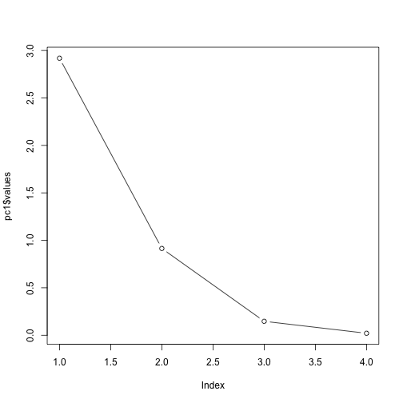

Cluster assignments vs actual species
| setosa | versicolor | virginica |
|---|---|---|
| 50 | 0 | 0 |
| 0 | 48 | 4 |
| 0 | 2 | 46 |
Jenna Blumenthal
Tutorial #: 3
MIE 1402
| Sepal.Length | Sepal.Width | Petal.Length | Petal.Width | Species |
|---|---|---|---|---|
| 5.1 | 3.5 | 1.4 | 0.2 | setosa |
| 4.9 | 3.0 | 1.4 | 0.2 | setosa |
| 4.7 | 3.2 | 1.3 | 0.2 | setosa |
| 4.6 | 3.1 | 1.5 | 0.2 | setosa |
| 5.0 | 3.6 | 1.4 | 0.2 | setosa |
| 5.4 | 3.9 | 1.7 | 0.4 | setosa |
pc1 <- principal(iris[1:4], 4)
pc1
## Principal Components Analysis
## Call: principal(r = iris[1:4], nfactors = 4)
## Standardized loadings (pattern matrix) based upon correlation matrix
## RC1 RC3 RC2 RC4 h2 u2 com
## Sepal.Length 0.53 0.85 0.00 0.00 1 1.1e-16 1.7
## Sepal.Width -0.17 -0.04 0.98 -0.01 1 4.4e-16 1.1
## Petal.Length 0.78 0.54 -0.28 0.14 1 -4.4e-16 2.2
## Petal.Width 0.89 0.41 -0.20 -0.06 1 0.0e+00 1.5
##
## RC1 RC3 RC2 RC4
## SS loadings 1.71 1.18 1.09 0.02
## Proportion Var 0.43 0.30 0.27 0.01
## Cumulative Var 0.43 0.72 0.99 1.00
## Proportion Explained 0.43 0.30 0.27 0.01
## Cumulative Proportion 0.43 0.72 0.99 1.00
##
## Mean item complexity = 1.6
## Test of the hypothesis that 4 components are sufficient.
##
## The root mean square of the residuals (RMSR) is 0
## with the empirical chi square 0 with prob < NA
##
## Fit based upon off diagonal values = 1
plot(pc1$values, type = "b")

pc2 <- principal(iris[1:4], 2)
pc2
## Principal Components Analysis
## Call: principal(r = iris[1:4], nfactors = 2)
## Standardized loadings (pattern matrix) based upon correlation matrix
## RC1 RC2 h2 u2 com
## Sepal.Length 0.96 0.05 0.92 0.0774 1.0
## Sepal.Width -0.14 0.98 0.99 0.0091 1.0
## Petal.Length 0.94 -0.30 0.98 0.0163 1.2
## Petal.Width 0.93 -0.26 0.94 0.0647 1.2
##
## RC1 RC2
## SS loadings 2.70 1.13
## Proportion Var 0.68 0.28
## Cumulative Var 0.68 0.96
## Proportion Explained 0.71 0.29
## Cumulative Proportion 0.71 1.00
##
## Mean item complexity = 1.1
## Test of the hypothesis that 2 components are sufficient.
##
## The root mean square of the residuals (RMSR) is 0.03
## with the empirical chi square 1.72 with prob < NA
##
## Fit based upon off diagonal values = 1
pc3 <- principal(iris[1:4], 2, rotate = "oblimin")
## Loading required namespace: GPArotation
pc3
## Principal Components Analysis
## Call: principal(r = iris[1:4], nfactors = 2, rotate = "oblimin")
## Standardized loadings (pattern matrix) based upon correlation matrix
## TC1 TC2 h2 u2 com
## Sepal.Length 1.00 0.20 0.92 0.0774 1.1
## Sepal.Width -0.02 0.99 0.99 0.0091 1.0
## Petal.Length 0.94 -0.16 0.98 0.0163 1.1
## Petal.Width 0.93 -0.11 0.94 0.0647 1.0
##
## TC1 TC2
## SS loadings 2.75 1.08
## Proportion Var 0.69 0.27
## Cumulative Var 0.69 0.96
## Proportion Explained 0.72 0.28
## Cumulative Proportion 0.72 1.00
##
## With component correlations of
## TC1 TC2
## TC1 1.00 -0.27
## TC2 -0.27 1.00
##
## Mean item complexity = 1
## Test of the hypothesis that 2 components are sufficient.
##
## The root mean square of the residuals (RMSR) is 0.03
## with the empirical chi square 1.72 with prob < NA
##
## Fit based upon off diagonal values = 1
ggplot(iris, aes(Petal.Length, Petal.Width, color = Species)) + geom_point()

set.seed(20)
irisCluster <- kmeans(iris[, 3:4], 3, nstart = 20)
irisCluster$centers
## Petal.Length Petal.Width
## 1 1.462000 0.246000
## 2 4.269231 1.342308
## 3 5.595833 2.037500
Cluster assignments vs actual species
| setosa | versicolor | virginica |
|---|---|---|
| 50 | 0 | 0 |
| 0 | 48 | 4 |
| 0 | 2 | 46 |
Field A, Miles J, Field Z. Discovering Statistics Using R. London: Sage; 2012.
/
#